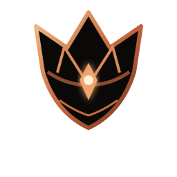

01 — ATTACK
Commit to the strike.
Read the distance, choose the moment, then follow through. The current demo includes a basic Ember Pulse attack.
IN WEB DEMO

ASHENCROWNTHE LAST EMBERA DARK-FANTASY ACTION RPG / WEB DEMO
THE CROWN REMEMBERS NOTHING.
THE LAST EMBER
The Crown erased a village.
One ember remembers every name.
A WORLD THAT FORGOT
A village vanished from the Crown’s records. Its roads were cut from maps, its people from memory. Beneath Hollow, a bell still carries the names no history will admit.
Follow the last ember through a quiet sanctuary and into a story about memory, loyalty, and what should survive a fallen kingdom.
Read the world’s record02 / THE ART OF SURVIVAL
The wider combat design rewards patience and precise timing. The browser demo exposes a smaller, playable slice while the full Soulslike combat set remains in development.
Read the distance, choose the moment, then follow through. The current demo includes a basic Ember Pulse attack.
Evade a telegraphed strike and create room to breathe. A dedicated roll/parry/Perfect Dodge combat loop is part of the wider design, not fully exposed in this demo.
The full design plans combo chains, parries, Perfect Dodge and Q / E / R skills. In the web demo, role skills use 1 / 2 / 3 where available.
03 / THE LOST CHRONICLES
The planned journey crosses ruined sanctuaries, drowned archives and a glass observatory. Only the opening chapter is represented as the playable web demo today.
Selected · The Last Ember — PLAYABLE DEMO
04 / THE FIGURES LEFT BEHIND
Two existing GLB models anchor the visual direction. They are model showcases, not a promise that every character or animation is fully integrated into gameplay.
THE EMBERBOUND
The Sentinel’s layered armor and folded mantle establish the project’s charcoal, antique brass and ember palette.
EXISTING MODEL ASSETTHE CROWN’S SHADOW
The Ashen Regent is the companion boss model in the repository. Boss encounters and animation integration remain prototype work.
EXISTING BOSS MODEL ASSET05 / THE LEGACY YOU CARRY
The long-term design combines equipment ranks, a Sanctuary hub and Expeditions. The browser demo exposes only part of the intended progression loop.
Rank structure is part of the project design; this landing page does not imply all eight ranks are implemented or balanced in the demo.
A quiet hub for characters, preparation and the memory that carries forward.
HUB SYSTEM / PARTIALA planned replayable endgame loop built around risk, discovery and earned rewards.
ENDGAME DESIGN / IN PROGRESSQuests, people and choices are designed to shape what the world remembers.
STORY SYSTEM / PROTOTYPE06 / YOUR JOURNEY, KEPT
The web demo saves progress on this device. Optional Supabase sign-in and cloud saves depend on the deployment’s existing configuration; they are not guaranteed to be enabled on every hosted build.
Signing in is optional for the local demo. Your existing account and cloud-save flow is unchanged.
Continue without an account07 / BEFORE YOU CROSS
A transparent field guide for this pre-alpha browser demo.
The browser demo includes a 3D space to explore, NPC interaction and dialogue, quest objectives, a basic attack, dodge, inventory, map, journal and local device saves. Some systems are prototypes.
No. The page presents the ten-chapter story roadmap. The opening chapter is the current playable web slice; the remaining chapters are not being presented as complete, playable content.
The browser demo uses local storage on this device. Cloud save is optional and depends on the existing Supabase deployment configuration and account sign-in.
No. The public Play link opens a browser prototype powered by Three.js. It is separate from the Unity C# source and is labelled pre-alpha.
The website is designed to adapt to mobile screens, but the browser gameplay experience has not been verified on every phone, browser or touch-control setup.
THE FIRE IS NOT GONE.
PRE-ALPHA · BROWSER DEMO · IN DEVELOPMENT